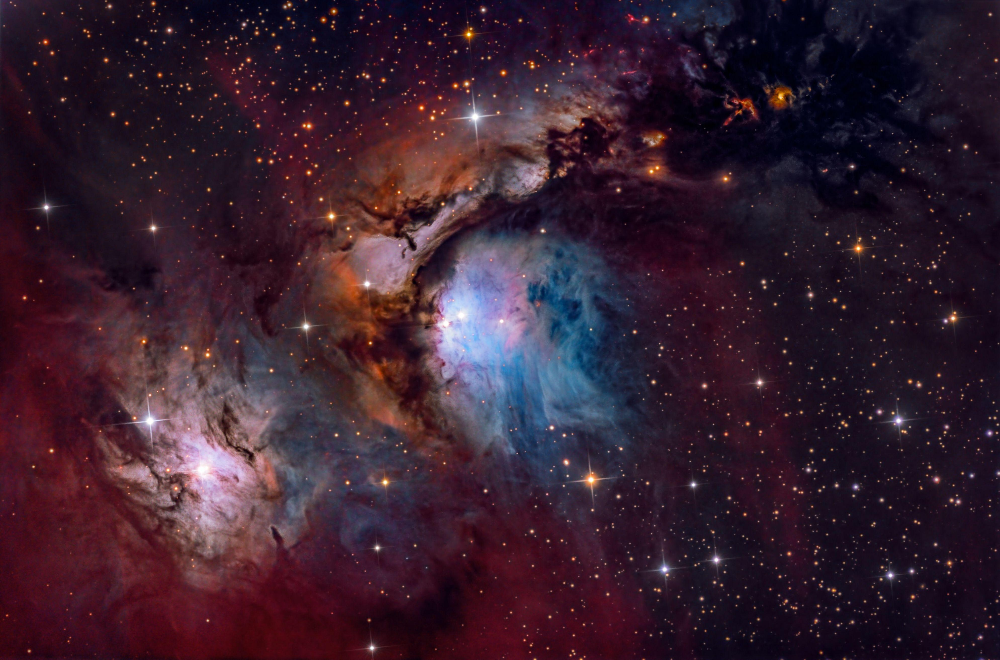
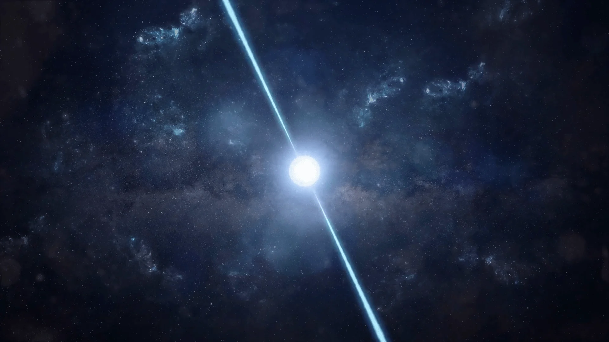
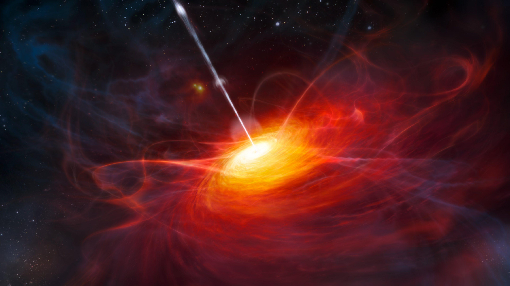
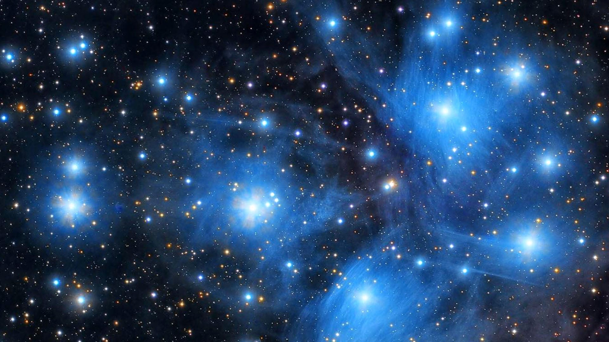
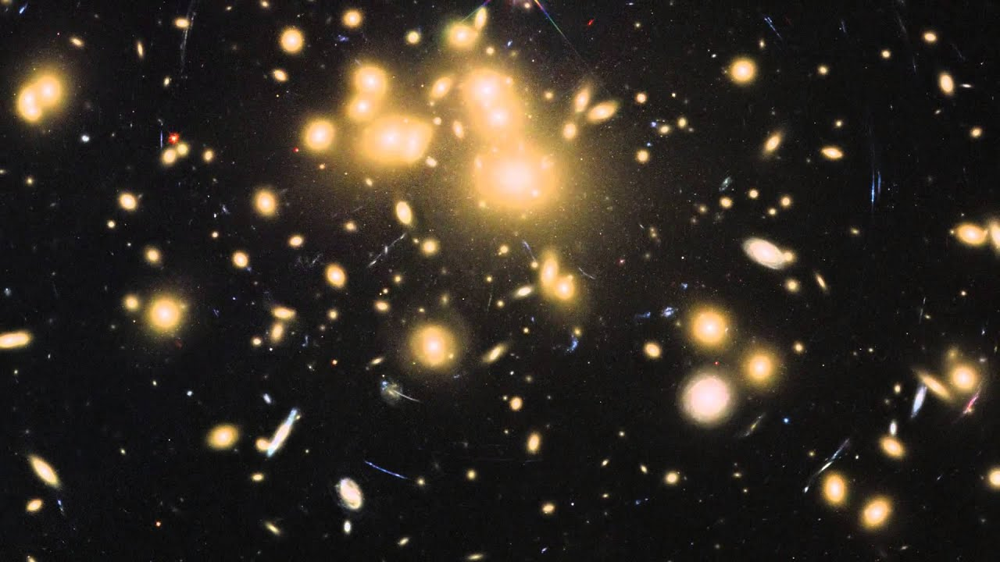
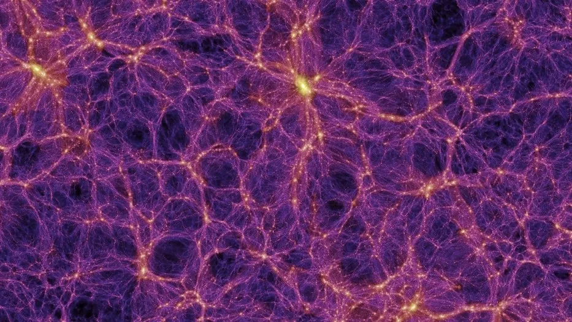
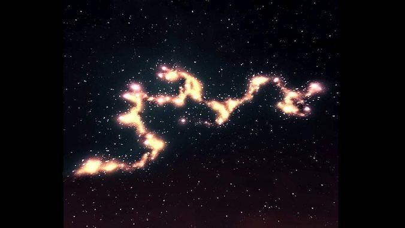
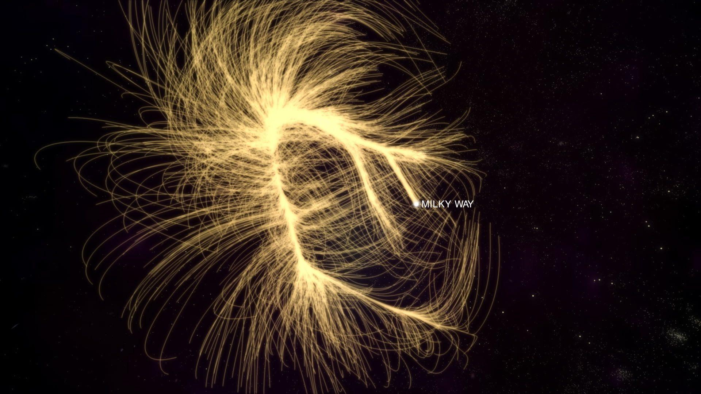

Nebulae are massive clouds of gas and dust in space. They are often called stellar nurseries because new stars are born inside them. Some nebulae form when stars die and release material into space. They can glow in beautiful colors due to ionized gases. The Orion Nebula is one of the most famous nebulae and is visible to the naked eye.

The Orion Nebula, a stellar nursery where new stars are born.
Pulsars are rapidly rotating neutron stars that emit beams of radiation. These beams sweep across space like lighthouse beams. Pulsars rotate very fast and can spin several times per second. They are incredibly dense and have strong magnetic fields.

Fun Fact: Pulsars sound like Lord Shiva's drum beats (Damru).
Quasars are extremely bright and distant objects powered by massive energy sources at the centers of galaxies. They release enormous radiation and are among the brightest objects in the universe.

Quasars are so bright that they can outshine entire galaxies!
Star clusters are groups of stars held together by gravity. There are two main types: open clusters and globular clusters. These clusters help scientists study how stars form and evolve.

The Pleiades, an open star cluster visible to the naked eye.
Galaxy clusters are huge groups of galaxies bound together by gravity. They can contain hundreds or thousands of galaxies. They are among the largest known structures in the universe.

The Abell 1689 galaxy cluster, one of the most massive known clusters.
The intergalactic medium is the matter that exists between galaxies. It contains thin gas, plasma, and radiation. It plays an important role in galaxy formation and cosmic evolution.

The vast space between galaxies, filled with gas and plasma.
Cosmic filaments are massive thread-like structures made of galaxies and dark matter. They form a cosmic web connecting galaxy clusters across the universe.

The Herculis Corona Borealis Great Wall — the largest known structure.
Superclusters are among the largest structures in the universe. They are made of many galaxy clusters grouped together by gravity. Our galaxy is part of the Laniakea Supercluster.

The Laniakea Supercluster, which includes our Milky Way galaxy.